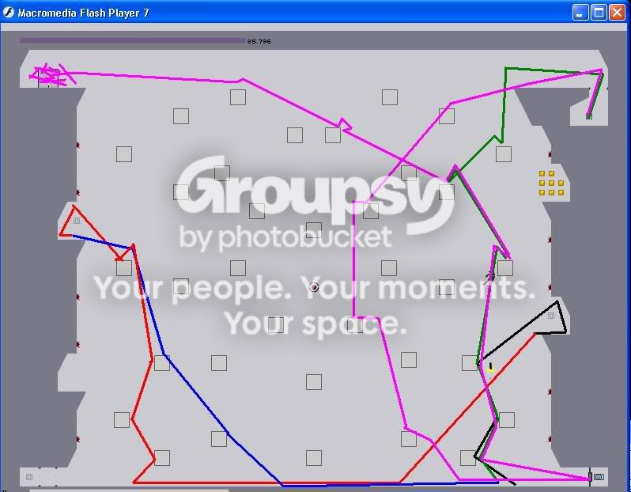

hey if i could have a route on paint that would help
Wow, do I ever remember this level! I hated it and it took me forever because I wasn't nearly as good as I am now. Doing a paint route for this level could get interesting but I will try to get an easy one for you after I finish a 10 page paper that is due Thursday night and also after I make a paint map for someone else who I already told I would. Good luck and keep on trying.
man u rock take ur time school is more important then me
Here I did the best i could do
The black, green, blue, and pink are all kind of mixed at the beginning there so hope its legible!
Order:
Black
Red
Blue
Green
Pink
Any questions feel free to ask!

The black, green, blue, and pink are all kind of mixed at the beginning there so hope its legible!
Order:
Black
Red
Blue
Green
Pink
Any questions feel free to ask!
one thing how do u do the jump to the 1st 2 switches ur way i always miss the 3rd bounce block
If you can wait, I think my path might be easier than -st-'s, athough I am by no means trying to put down his work...you can decide for yourself if I get it done. I will probably be able to get around to it this weekend. I hope that isn't too late for you.
Np SiWi no offence taken. If you keep practicing you will get it down or you could wait for SiWi's way.
st u just opened my world up to a new bounce block jump thanks
hey if i could get an easier way to ened it that would be great silent witness
hey if i could get an easier way to ened it that would be great silent witness
Haha im glad! keep it up and you will master it. I know you can do it!
Sorry, thenman2, I won't be able to make your map because I have to leave the N forums because my mom and older brother feel as though I spend too much time here. I am sorry I said I could get you and better path only to not produce results but obey I must.
P.S. To everyone else here, I will miss you and I loved it here...you were like family to me. Maybe someday I will be back to hang out with you all again.
P.P.S. Thanks for everything Keron, I appreciate my second chance, and if you need to get ahold of me about you know what then feel free, my address is the same and I will be glad to help.
P.S. To everyone else here, I will miss you and I loved it here...you were like family to me. Maybe someday I will be back to hang out with you all again.
P.P.S. Thanks for everything Keron, I appreciate my second chance, and if you need to get ahold of me about you know what then feel free, my address is the same and I will be glad to help.
S-T in your map you dont get the bottom left switch. 
Ah cant believe your going too SW, was good having you here though dude, take care.
Anyway this is my route, its pretty much the highscore route but its not that hard and if you have got this far then you should be able to do this.
Ah cant believe your going too SW, was good having you here though dude, take care.
Anyway this is my route, its pretty much the highscore route but its not that hard and if you have got this far then you should be able to do this.
Ha, I knew I could count on wedgie to cover for me...that is a nice map he made too. I only wish I could stay...it breaks my heart to leave and it pisses me off that I have to. Hey wedgie, you don't have to, but do you want to be my penpal through e-mail? We could get to be better friends and just find out more about each other. If you don't want to I understand and it is no big deal. Anyway, Wedgie, you freakin' rule and I hope you make admin sometime. See you around... 
Ah wow thats really cool of you to say that dude. You have just made my day lol. Yeah it would be cool to keep in touch too. My e-mail is wedgie2k [at] hotmail.com. 
SW, we are definitely going to miss you around here. You were one of the saner new members and you were incredibly helpful with the levels. I feel sorry that you have to leave only two and a half weeks after you joined.
Take care, man.
Take care, man.
 Come back soon! Sneak on!
Come back soon! Sneak on!I prefered SiWi's way, except with getting the bottom left switch...
go to a public libraryand get on
thanks any ways
thanks any ways
I prefered SiWi's way, except with getting the bottom left switch...
You mean ST's way? My route is probably harder for a beginner to do. But i think its the best way.
Im so sorry I didn't see I forgot the switch!
After you get the 2nd switch go get the 3rd, just drop straight down and then follow the blue line.
After you get the 2nd switch go get the 3rd, just drop straight down and then follow the blue line.